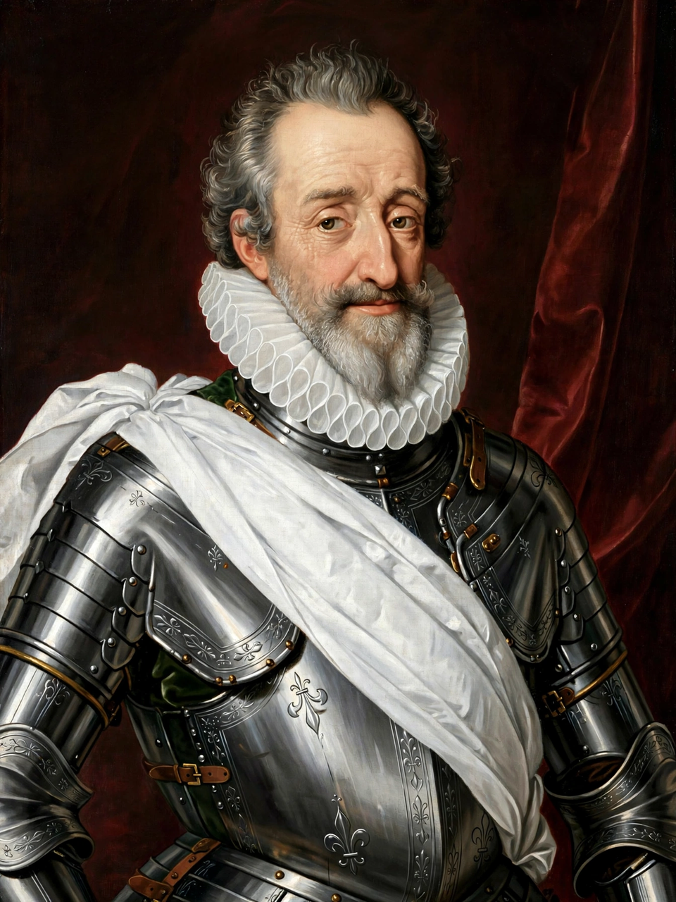

| Henry IV | |
 | |
| Reign (France) | 2 August 1589 – 14 May 1610 |
|---|---|
| Reign (Navarre) | 9 June 1572 – 14 May 1610 |
| Predecessor | Henry III (France); Jeanne d'Albret (Navarre) |
| Successor | Louis XIII |
| Born | 13 December 1553, Pau, Kingdom of Navarre |
| Died | 14 May 1610 (aged 56), Paris, France (assassinated) |
| House | Bourbon |
| Spouses | Margaret of Valois (m. 1572, annulled 1599); Marie de' Medici (m. 1600) |
Henry IV (French: Henri IV; 13 December 1553 – 14 May 1610), also known by the epithets Good King Henry (le bon roi Henri) and Henry the Great (Henri le Grand), was king of Navarre (as Henry III) from 1572 and king of France from 1589 to 1610. He was the first monarch of France from the House of Bourbon, a cadet branch of the Capetian dynasty, and his reign ended the French Wars of Religion with the Edict of Nantes (1598), which granted substantial rights to Protestant Huguenots.
Raised a Protestant, Henry fought on the Huguenot side in the Wars of Religion. He survived the St. Bartholomew's Day massacre of 1572, in which he was compelled to convert to Catholicism and held at court for years, before escaping and returning to Protestantism. On the extinction of the Valois line in 1589 he inherited the French throne, but the Catholic League resisted him; after victories at Arques (1589) and Ivry (1590) and a second, lasting conversion to Catholicism in 1593 — the occasion of the saying attributed to him, "Paris is well worth a Mass" — he was crowned at Chartres in 1594 and entered Paris. As king, working with his minister Sully, he restored royal finances, promoted agriculture and infrastructure, and rebuilt a kingdom devastated by decades of civil war. He was assassinated in 1610 by the Catholic zealot François Ravaillac.
Henry was born at the Château de Pau in Béarn, the son of Antoine de Bourbon, Duke of Vendôme and king consort of Navarre, and Jeanne d'Albret, queen of Navarre, a leading figure of French Protestantism. According to the famous legend, his grandfather Henry II of Navarre had his lips rubbed with garlic and wine at his christening. Raised partly at the court of France and partly in Béarn, he was educated as a Calvinist and learned soldiering in the Huguenot armies under Admiral Coligny.
In 1572 Henry succeeded his mother as king of Navarre and married Margaret of Valois, sister of Charles IX, in a marriage intended to reconcile Catholics and Protestants. Days later, the St. Bartholomew's Day massacre slaughtered thousands of Huguenots; Henry survived by converting to Catholicism and remained a virtual prisoner at court until his escape in 1576, when he rejoined the Protestant cause and became its acknowledged leader. As heir presumptive after the death of the Duke of Anjou in 1584, he fought the "War of the Three Henrys" against Henry III and Henry of Guise, winning the Battle of Coutras in 1587. After the assassinations of Guise (1588) and Henry III (1589), Henry IV succeeded to the throne while still having to conquer his kingdom by arms.
Henry abjured Protestantism at Saint-Denis on 25 July 1593 and was crowned at Chartres Cathedral on 27 February 1594; Paris opened its gates to him in March. Pope Clement VIII absolved him in 1595. War with Spain ended with the Peace of Vervins (1598), and in April 1598 Henry issued the Edict of Nantes, granting Huguenots freedom of conscience, limited freedom of worship, and fortified places of security — a pragmatic settlement that ended the religious wars (the edict was revoked by Louis XIV in 1685).
With Maximilien de Béthune, Duke of Sully, as chief minister, Henry balanced the budget, reduced peasant taxes, drained marshes, planted mulberry trees for a silk industry, built canals and roads, and extended Paris with projects such as the Pont Neuf (completed 1607) and the Place des Vosges. He is credited with the aspiration that every French labourer should have "a chicken in his pot" on Sundays (la poule au pot). Abroad, he supported Protestant powers against the Habsburgs, encouraged French colonization in Canada (Samuel de Champlain founded Quebec in 1608), and was preparing a major campaign against the Habsburgs when he was killed.
On 14 May 1610, as the king's carriage was halted in traffic in the Rue de la Ferronnerie in Paris, François Ravaillac stabbed Henry IV to death. Henry was buried at the Basilica of Saint-Denis; his nine-year-old son succeeded as Louis XIII under the regency of Marie de' Medici. Long celebrated as le Vert-Galant (for his many mistresses, including Gabrielle d'Estrées) and as the model of a unifying, pragmatic monarch, Henry IV became the subject of a lasting national legend, revived in anthems and statues — notably the equestrian statue on the Pont Neuf, recast in 1818 after the original was destroyed in the Revolution.
See also: Saint-Germain-en-Laye, Edict of Nantes, French Wars of Religion, Louis XIII